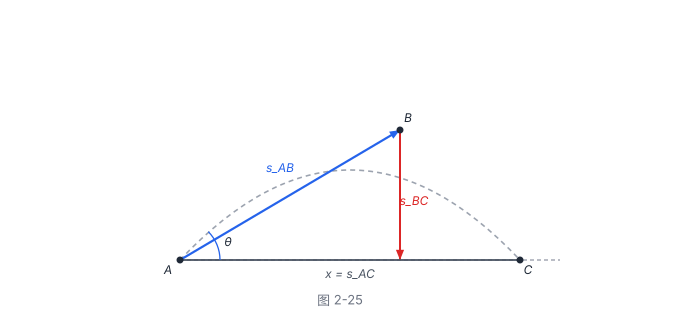
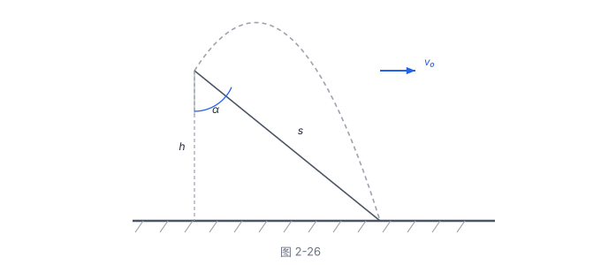
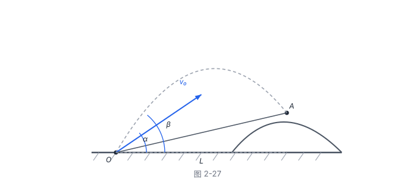
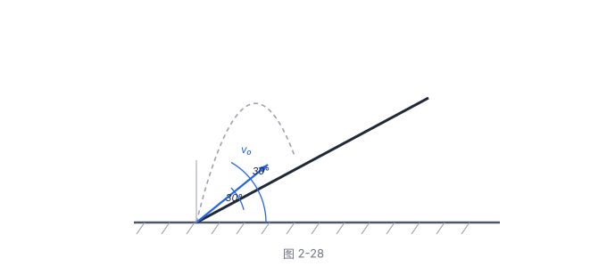
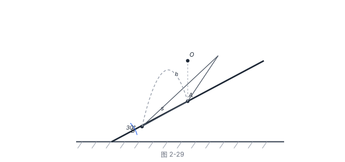
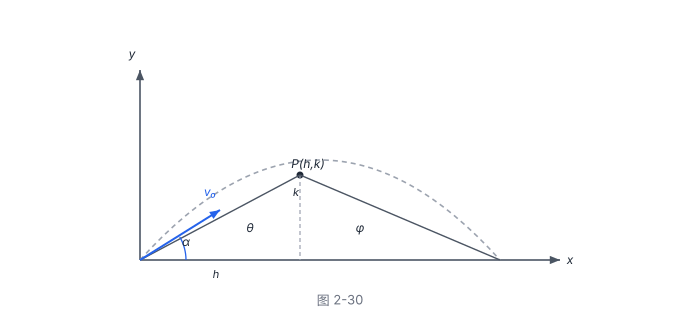

二、用位移矢量三角形法巧解运动学问题
例 1斜抛的射程与射高
一个物体做斜上抛运动，抛射角为 \( \theta \)，初速度为 \( v_0 \)。求射程和射高。
解斜抛运动可看做是在初速度方向上的匀速直线运动和从抛出点开始的自由落体运动的合运动。作矢量三角形如图 2-25 所示。物体在飞行时间 \( T \) 内，匀速运动的位移 \( s_{AB} = v_0 T \)，自由落体运动的位移 \( s_{BC} = \dfrac{1}{2} g T^2 \)，其合位移 \( s_{AC} \)（设 \( s_{AC} = x \)）即为水平射程。

在矢量三角形 \( ABC \) 中，\( s_{BC} = s_{AB}\sin\theta \)，即 \( \dfrac{1}{2} g T^2 = v_0 T \sin\theta \)，得 \( T = \dfrac{2v_0\sin\theta}{g} \)。
由图 2-25 可以看出 \( x = v_0 T \cos\theta = v_0 \cos\theta \cdot \dfrac{2v_0 \sin\theta}{g} = \dfrac{v_0^2 \sin 2\theta}{g} \)。
设射高 \( FG = y \)，延长 \( GF \) 交 \( AB \) 于 \( E \)，连接 \( AF \)，则 \( \triangle AEF \) 是斜抛运动物体达到最高点时，对应的位移矢量三角形。由图 2-25 可知，匀速运动的位移 \( s_{AE} = v_0 \dfrac{T}{2} \)（\( \dfrac{T}{2} \) 为飞行时间的一半），自由落体运动的位移为 \( s_{EF} = \dfrac{1}{2} g \left(\dfrac{T}{2}\right)^2 \)，所以
在 \( \triangle AEG \) 中 \( s_{EG} = s_{AE}\sin\theta = \dfrac{v_0^2 \sin^2\theta}{g} \)，则
例 2飞机投弹的瞄准角
一飞机在 \( h \) 米高处，以水平速率 \( v_0 \) 向地面上轰炸目标飞行。求瞄准角（瞄准器到目标的视线与铅直线的夹角）为多大时，就应投弹。

解炸弹的初速度和飞机的初速度相同，作位移矢量三角形如图 2-26 所示，炸弹落到地面的时间，就是自由落体落到地面的时间，且
在这段时间内炸弹经过的水平位移为
设瞄准角为 \( \alpha \)，从图 2-26 可以看出
所以
例 3击中山上靶所需初速
如图 2-27 所示，在小山上放置一个靶 \( A \)，由炮位所在处 \( O \) 看靶的仰角为 \( \alpha \)，炮与靶的水平距离为 \( L \)，射击时炮身的仰角为 \( \beta \)。问炮弹出膛的速度 \( v_0 \) 应为多大时才能击中靶。

解依题意作矢量三角形 \( OAB \)，设在时间 \( t \) 内击中靶，则在这段时间内，匀速运动的位移为
自由落体运动的位移为
在 \( \triangle OAB \) 中，由正弦定理得
得
从图 2-27 中可以看出
则
所以
例 4斜面上的斜抛
如图 2-28 所示，在倾角为 \( 30^\circ \) 的斜面底端，用初速度 \( v_0 \) 向上与斜面夹 \( 30^\circ \) 角抛出一小球。求小球的飞行时间与在斜面上的射程。

解小球的斜抛运动可以看成是一个以速度 \( v_0 \) 的匀速直线运动（抛出方向）和一个自由落体运动的合运动。而自由落体运动的位移总是竖直向下的，根据位移矢量三角形，有
又 \( s_1 = v_0 t \)，\( s_2 = \dfrac{1}{2} g t^2 \)，所以
得
则
例 5落斜面弹跳两次之间
如图 2-29 所示，一小球从高为 \( h \) 处自由落下与倾角为 \( 30^\circ \) 的光滑斜面发生完全弹性碰撞，碰后小球做斜抛运动又与斜面第二次碰撞。求小球在两次碰撞之间经历的时间及两次碰撞点 \( A \)、\( B \) 之间的距离。

解小球从距 \( A \) 高为 \( h \) 的 \( O \) 点自由下落，与 \( A \) 点碰前的速度为 \( v = \sqrt{2gh} \)。
小球与 \( A \) 点发生弹性碰撞后，速度沿 \( AC \) 方向，由弹性碰撞的规律可知 \( \angle OAD = \angle DAC = 30^\circ \)，\( v = v_0 = \sqrt{2gh} \)。
小球与 \( A \) 点碰后做斜抛运动，可以把小球的运动看做为一个沿 \( AC \) 方向的匀速直线运动和沿竖直方向的自由落体运动的合运动。故作出位移矢量三角形 \( ABC \) 如图 2-29 所示。由几何知识可知 \( \triangle ABC \) 是等边三角形，有 \( s = s_1 = s_2 \)。
又 \( s_1 = v t \)，\( s_2 = \dfrac{1}{2} g t^2 \)，所以
得
例 6证 tanα = tanθ + tanφ
从直角坐标的原点 \( O \) 以仰角 \( \alpha \) 射出子弹，恰好通过空间一点 \( P \)，\( P \) 的坐标为 \( (h, k) \)，如图 2-30 所示。设水平射程为 \( L \)，子弹落在 \( x \) 轴上的 \( Q \) 点，从 \( O \)、\( Q \) 两点引到 \( P \) 点的直线和 \( x \) 轴所成的角度分别是 \( \theta \) 和 \( \varphi \)。试证明

证明把斜抛运动看成沿抛出方向以 \( v_0 \) 为速度的匀速直线运动和竖直方向的自由落体运动这两个分运动的合运动，则在抛出后经时间 \( t \) 到 \( P \) 点，设整个飞行时间为 \( T \)，子弹运动到 \( Q \) 点。则
所以
由相似三角形可知 \( \dfrac{OA}{OB} = \dfrac{AD}{BQ} = \dfrac{AP + PD}{BQ} \)，即
又 \( T = \dfrac{2 v_0 \sin\alpha}{g} \)，\( t = \dfrac{h}{v_0 \cos\alpha} \)，\( L = \dfrac{2 v_0^2 \sin\alpha \cos\alpha}{g} \)，所以
即
将 ③ 式代入 ① 式得 \( \tan\alpha = \tan\theta + \tan\varphi = \dfrac{k}{h} + \dfrac{k}{L - h} \)。证毕。